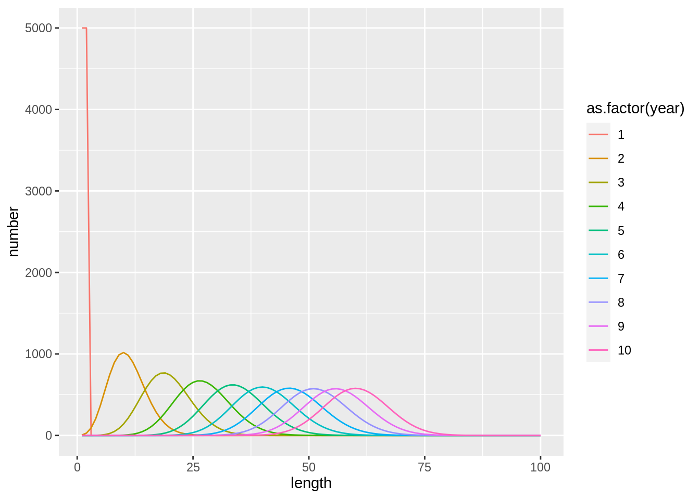
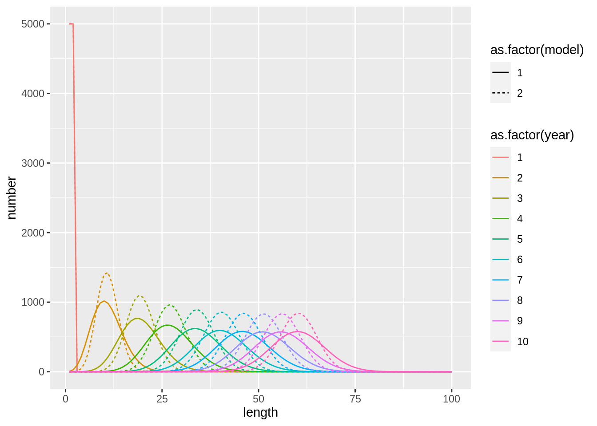
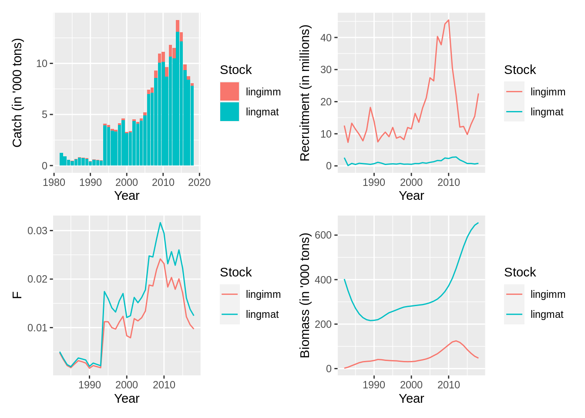

6 Building complex Gadget models
6.1 Defining growth
Let us begin by setting the scene with time and area in the typical fashion:
## [1] "simple_growth_model"
## attr(,"mainfile")
## [1] "main"
## attr(,"class")
## [1] "gadget.variant" "list"## lets look at the files in gd
#fs::dir_ls(gd) ## nothing has happened
## Time file
schedule <-
expand.grid(year = 1:10, step = 1:4) %>%
arrange(year)
gadgetfile('Modelfiles/time',
file_type = 'time',
components = list(list(firstyear = min(schedule$year),
firststep=1,
lastyear=max(schedule$year),
laststep=4,
notimesteps=c(4,3,3,3,3)))) %>% ## number of time steps and step length in months
write.gadget.file(gd)
## Area file
gadgetfile('Modelfiles/area',
file_type = 'area',
components = list(list(areas = 1,
size = 1,
temperature = schedule %>%
mutate(area = 1, temperature = 5)))) %>%
write.gadget.file(gd)Now that we have attributes of the time and place, we can insert a population into
it. Remember that population subcomponents are called ‘stocks’ in Gadget. To do this, we use the
function gadgetstock. However, using gadgetstock also has some default settings built in for
convenience. The first one is that it automatically sets up the Gadget model with growth
implemented. If we first generate a default stock (with name ‘test’), we find that much of
the structural information we supplied above was not supplied, and most of the other settings
are turned off (value = 0, more on those settings later).
## ; Generated by Rgadget 0.5
## stockname test
## livesonareas
## minage
## maxage
## minlength
## maxlength
## dl
## refweightfile
## growthandeatlengths
## doesgrow 1
## growthfunction lengthvbsimple
## growthparameters #test.Linf (* 0.001 #test.k) #test.walpha #test.wbeta
## beta (* 10 #test.bbin)
## maxlengthgroupgrowth 15
## naturalmortality
## iseaten 0
## doeseat 0
## initialconditions
## doesmigrate 0
## doesmature 0
## doesmove 0
## doesrenew 0
## doesspawn 0
## doesstray 0However, growth is the exception: doesgrow is turned on (value set to 1) with the growth
function lengthvbsimple implemented and parameters supplied to that function as
test.Linf, test.k (multiplied by 0.001 to keep it help the optimisation routine by
placing it on a similar scale to other parameters), test.walpha, test.wbeta,
test.bbin (also multiplied by a scalar), and a constant value for maxlengthgroupgrowth.
6.1.1 Growth
Growth is implemented using three processes in Gadget. The first process is described by a growth function that shows how mean body size at age changes over time. The second process generates variability around that mean length at age relationship using a beta binomial distribution (currently, no other distributions are implemented). The third process translates between lengths and weights.
The first and third processes are implemented together via the chosen growth function. In the
default Rgadget lengthvbsimple function implementation, the length at infinity and growth rate
parameters supplied to this function are automatically named test.Linf and test.k to
signify that these parameters only refer to growth within the ‘test’ stock. Similarly, an
exponential relationship is used to represent growth, using the automatically named
test.walpha and test.wbeta parameters. Because they are by default supplied here and
supplied as switches with ‘#’ preceding them, they will be automatically
generated in the parameter file when an initial Gadget simulation is run, and their values can
then be controlled from this file (as demonstrated here). Beyond lengthvbsimple,
there are a variety of other growth functions that can be implemented,
including those that implement starvation, time- and area- dependent growth, or reading weights
from a length-weight key. These are described in the Gadget User Guide.
The second process is implemented in the default by providing a single switch test.bbin
parameter to the beta-binomial distribution, along with a constant value for
maxlengthgroupgrowth. The beta-binomial distribution is implemented in Gadget because high
flexibility in the distribution of growth deviations is provided by changing only a single
estimable parameter. The constant value for maxlengthgroupgrowth describes the maximum number of
length bins a fish is allowed to grow in a single time step, so it should be set high enough to
be realistic.
As growth is one of the major determinants of population dynamics, some words of caution should be mentioned in any discussion of the implementation of growth in Gadget. The first is that the implementation of the Von Bertalanffy growth curves used in Gadget are based on predicting changes in length over a time step, based on the length at the end of the previous time step and the length of the time step. Therefore, length is not directly associated with age. This is a useful property when Gadget is being used for estimation, because it implies that age data are not a prerequisite to estimating growth (although it does help). However, it also implies that the parameter values obtained when estimating (i.e., the length at infinity \(L_\infty\) and growth rate \(k\) parameters) are not directly comparable to those estimated when using length and age data in non-linear model estimation (standard methods). In particular, \(L_\infty\) using standard estimation methods with age data would represent the mean length attainable at infinity, but in Gadget it represents the maximal length that could be expected at infinity, and therefore almost all fish tracked in the model should actually be below this value. If individuals happen to surpass \(L_\infty\) in one time step due to variability in growth implemented via the beta binomial distribution, those individuals will exhibit negative growth in the next time step. This process is not represented by standard methods of estimation using age data. Therefore, care should be taken that any final values used for \(L_\infty\) within Gadget should be roughly above that expected of most fish observed, in order to avoid accidentally implementing unexpected and unrealistic negative growth.
The second word of caution is that although the beta-binomial distribution has proven to be a very useful distribution for capturing realistic patterns in the variability of the growth process, it is not a very well-known or intuitive distribution. High values of beta produce a narrow distribution, while lower values produce a more dispersed distribution with a larger right-hand tail. Very low values should be avoided because it changes the expected shape of the distribution. In addition, the default value of maximum 15 length bin steps by which a fish could grow is set to be generous to allow the beta-binomial enough space to estimate the shape of the distribution without being confined by an upper limit. However, in practice, where growth is difficult to estimate or cohorts have very narrow length distributions, setting this parameter to a much lower value (2 - 4) can sometimes better capture observed patterns in growth variability.
Finally, it should be kept in mind that growth, like all other time-dependent processes, is
implemented within Gadget according to the time steps provided, not corresponding to an annual
basis. For example, a model with quarterly time steps would yield annual growth based on \(\Delta t = 1/4\),
whereas the same in monthly time steps would yield \(\Delta t = 1/12\). Likewise, setting
maxlengthgroupgrowth to 2 would be far more constricting for a model with quarterly time
steps than a model with monthly time steps: at most \(2 * 4 = 8\) length group steps would be allowed
per annum rather than \(2 * 12 = 24\). An exception to this implementation is values for
mortality: they are expected to be suppled as annual mortality rates, and are therefore
subsequently divided among the time steps before implementation (e.g., so that \(M = 0.2\) is the
same in quarterly and monthly models).
To play around with the growth model we can now define a simple growth model to test the effect of various parameter settings:
## ; Generated by Rgadget 0.5
## stockname growth_stock
## livesonareas
## minage
## maxage
## minlength
## maxlength
## dl
## refweightfile
## growthandeatlengths
## doesgrow 1
## growthfunction lengthvbsimple
## growthparameters #growth_stock.Linf (* 0.001 #growth_stock.k) #growth_stock.walpha #growth_stock.wbeta
## beta (* 10 #growth_stock.bbin)
## maxlengthgroupgrowth 15
## naturalmortality
## iseaten 0
## doeseat 0
## initialconditions
## doesmigrate 0
## doesmature 0
## doesmove 0
## doesrenew 0
## doesspawn 0
## doesstray 0stock <-
stock %>%
gadget_update('stock',
livesonareas = 1,
maxage = 1,
minage = 1,
minlength = 0,
maxlength = 100,
dl = 1) %>%
gadget_update('naturalmortality',0) %>%
gadget_update('refweight',data=tibble(length=0:100,mean=1)) %>%
gadget_update('initialconditions',
normalparam = tibble(age = 1,
area = 1,
age.factor = 1,
area.factor =1,
mean = 1,
stddev = .1,
alpha = 1,
beta = 1))
stock %>%
write.gadget.file(gd)
stock## ; Generated by Rgadget 0.5
## stockname growth_stock
## livesonareas 1
## minage 1
## maxage 1
## minlength 0
## maxlength 100
## dl 1
## refweightfile Modelfiles/growth_stock.refwgt
## growthandeatlengths Aggfiles/growth_stock.stock.len.agg
## doesgrow 1
## growthfunction lengthvbsimple
## growthparameters #growth_stock.Linf (* 0.001 #growth_stock.k) #growth_stock.walpha #growth_stock.wbeta
## beta (* 10 #growth_stock.bbin)
## maxlengthgroupgrowth 15
## naturalmortality 0
## iseaten 0
## doeseat 0
## initialconditions
## minage 1
## maxage 1
## minlength 0
## maxlength 100
## dl 1
## normalparamfile Modelfiles/growth_stock.init.normalparam
## doesmigrate 0
## doesmature 0
## doesmove 0
## doesrenew 0
## doesspawn 0
## doesstray 0For the sake of testing let run the model and see if the run is successful:
## [1] "simple_growth_model"
## attr(,"mainfile")
## [1] "main"
## attr(,"class")
## [1] "gadget.variant" "list"To play with the effects of various settings:
read.gadget.parameters(paste(gd, 'params.out', sep = '/')) %>%
init_guess('alpha', value = 1) %>%
init_guess('beta', value = 1) %>%
init_guess('Linf', value = 100) %>%
init_guess('k$', value = 100) %>%
write.gadget.parameters(paste(gd, 'params.in', sep = '/'))
fit <- gadget.fit(wgts = NULL, params.file = 'params.in', gd = gd)## [1] "Reading input data"
## [1] "Running Gadget"
## [1] "Reading output files"
## [1] "Gathering results"
## [1] "Merging input and output"
We can also test a different value for \(\beta\) in the beta binomial:
## different value for the beta binomial
read.gadget.parameters(paste(gd, 'params.in', sep = '/')) %>%
init_guess('bbin', value = 100) %>%
write.gadget.parameters(paste(gd, 'params.in2', sep = '/'))
fit2 <- gadget.fit(wgts = NULL, params.file = 'params.in2', gd = gd)## [1] "Reading input data"
## [1] "Running Gadget"
## [1] "Reading output files"
## [1] "Gathering results"
## [1] "Merging input and output"fit$stock.full %>%
bind_rows(fit2$stock.full,.id='model') %>%
ggplot(aes(length,number,col=as.factor(year),lty = as.factor(model))) +
geom_line()
6.1.1.1 Exercise
- Investigate what are the effects of different growth rates (\(k\)) and \(L_\infty\) on the length distribution.
6.2 Ling stock assessment in Icelandic waters
Gadget is particularly useful in a stock assessment setting when age data are absent or sparse. In these cases, parameterising age-based stock assessement models may require a lot of pre-processing based on sparse age data to calculate the model input (e.g., catch at age), which can produce bias. Using length- and age-based models instead are appealing because comparisons sparse data can be directly incorporated into the model likelihood, rather than pre-processed. This was the original main motivation for developing the model presented here that is currently used for stock assessment.
In this example we present the stock assessment model used for ling Molva molva in Icelandic fisheries as an example of a length- and age-based model with all the standard components implemented, including natural mortality, fishing, growth, maturation, and recruitment.
6.3 Model initiation
First we load Rgadget, set up directories, and some default model dimensions and names to use throughout.
library(Rgadget)
base_dir <- 'ling_model'
vers <- c('01-base')
gd <- gadget.variant.dir(sprintf(paste0("%s/",vers),base_dir))
schedule <-
expand.grid(year = 1982:2018, step = 1:4) %>%
arrange(year)
gadgetfile('Modelfiles/time',
file_type = 'time',
components = list(list(firstyear = min(schedule$year),
firststep=min(schedule$step),
lastyear=max(schedule$year),
laststep=max(schedule$step),
notimesteps=c(4,3,3,3,3)))) %>%
write.gadget.file(gd)
## Write out areafile and update mainfile with areafile location
gadgetfile('Modelfiles/area',
file_type = 'area',
components = list(list(areas = 1,
size = 1,
temperature= schedule %>% mutate(area = 1, temperature = 5)))) %>%
write.gadget.file(gd)6.3.1 Maturation as multi-‘stock’ models
6.3.1.1 Generating stocks
In Gadget, maturation is modeled as a distributional shift between ‘stocks’, or more accurately substocks, of a true biological stock. In the case of standard fish stocks, this simply means that immature individuals are tracked within the immature ‘stock’ until they ‘transition’ to mature stock component. This structure is convenient because the generalized multi-‘stock’ implementation of life stages can be applied to more biologically complex scenarios that have more than two life stages, or biologically distinct components that need to be tracked separately (e.g., by sex), but still contribute to the entire population.
For ling, we set up an immature and a mature stock file using the gadgetstock function,
then update the ‘stock’ component of the file using gadget_update. Each ‘stock’ requires
a separate stock file with all biological processes defined; therefore each stock can have
different processes described for each stock. For
example, note that the stocks are also structured a little bit differently: since we know
young mature and old immature ling don’t exist, we don’t bother tracking them in the model.
mat_stock <- 'lingmat'
imm_stock <- 'lingimm'
## setup the immature stock first
ling.imm <-
gadgetstock(imm_stock,gd,missingOkay = TRUE) %>%
gadget_update('stock',
minage = 3,
maxage = 10,
minlength = 20,
maxlength = 160,
dl = 4,
livesonareas = 1)
ling.mat <-
gadgetstock(mat_stock,gd,missingOkay = TRUE) %>%
gadget_update('stock',
minage = 5,
maxage = 15,
minlength = 20,
maxlength = 160,
dl = 4,
livesonareas = 1) As described above in the Growth section, default settings are provided by the
gadgetstock function. However, those settings give parameters that are named to be
stock-specific. To simplify the model a bit, we change the parameters to have the same
value in both stocks, so that both stocks are governed by the same growth equation:
ling.imm <-
ling.imm %>%
gadget_update('doesgrow',
growthparameters=c(linf='#ling.Linf',
k=to.gadget.formulae(quote(0.001*ling.k)),
alpha = '#ling.walpha',
beta = '#ling.wbeta'),
beta = to.gadget.formulae(quote(10*ling.bbin)))
ling.mat <-
ling.mat %>%
gadget_update('doesgrow',
growthparameters=c(linf='#ling.Linf',
k=to.gadget.formulae(quote(0.001*ling.k)),
alpha = '#ling.walpha',
beta = '#ling.wbeta'),
beta = to.gadget.formulae(quote(10*ling.bbin))) An alternative way of implementing this would have been to keep the default parameter
names, but supply the same parameter value within the parameter file. Also notice
that although it is necessary to define the structural arguments listed above
(minage, maxage, minlength, maxlength, dl and livesonareas), updating the ‘stock’
component with gadget_update also sets up a few more convenient default settings in the
gadget stock file.
## [1] "Immature"## ; Generated by Rgadget 0.5
## stockname lingimm
## livesonareas 1
## minage 3
## maxage 10
## minlength 20
## maxlength 160
## dl 4
## refweightfile
## growthandeatlengths Aggfiles/lingimm.stock.len.agg
## doesgrow 1
## growthfunction lengthvbsimple
## growthparameters #ling.Linf (* 0.001 #ling.k) #ling.walpha #ling.wbeta
## beta (* 10 #ling.bbin)
## maxlengthgroupgrowth 15
## naturalmortality #lingimm.M #lingimm.M #lingimm.M #lingimm.M #lingimm.M #lingimm.M #lingimm.M #lingimm.M
## iseaten 0
## doeseat 0
## initialconditions
## doesmigrate 0
## doesmature 0
## doesmove 0
## doesrenew 0
## doesspawn 0
## doesstray 0## [1] "Mature"## ; Generated by Rgadget 0.5
## stockname lingmat
## livesonareas 1
## minage 5
## maxage 15
## minlength 20
## maxlength 160
## dl 4
## refweightfile
## growthandeatlengths Aggfiles/lingmat.stock.len.agg
## doesgrow 1
## growthfunction lengthvbsimple
## growthparameters #ling.Linf (* 0.001 #ling.k) #ling.walpha #ling.wbeta
## beta (* 10 #ling.bbin)
## maxlengthgroupgrowth 15
## naturalmortality #lingmat.M #lingmat.M #lingmat.M #lingmat.M #lingmat.M #lingmat.M #lingmat.M #lingmat.M #lingmat.M #lingmat.M #lingmat.M
## iseaten 0
## doeseat 0
## initialconditions
## doesmigrate 0
## doesmature 0
## doesmove 0
## doesrenew 0
## doesspawn 0
## doesstray 0In particular, growthandeatlengths has been supplied with a file path name
‘Aggfiles/lingmat.stock.len.agg’, which corresponds with a file that will be
automatically generated once the stock file is written [check it out in your folders].
This new aggregation file (or ‘Aggfile’) is required by Gadget, and contains information
on how to aggregate true lengths into length bins as individuals are tracked through the
model. Aggregation files also become important for the purposes of comparing
simulations to data, so they will be revisited later when model-fitting
procedures are introduced.
In addition, natural mortality parameters have been supplied as automatically
named switches (lingimm.M or lingmat.M) for every age. In the default case,
mortality is not age-dependent, so the same parameter is provided for every age.
6.3.1.2 Maturation process and timing
To implement maturation, we only want the immature stock to be able to mature and
transition, or be moved (ie., to the mature stock). Therefore, doesmove and
doesmature components are both switched on (values set to 1) by supplying
additional information to them, whereas neither of
these are switched on for the mature stock.
Maturation is split into a two-step process in Gadget. For all ages included in the
immature stock, maturation is determined by a maturation function (set using the
doesmature component). For all ages older than the immature stock, maturation is
governed by a stepwise ‘transition’ (or lack of transition) to the mature stock (set
using the doesmove component).
For all ages within the immature stock, at what length individuals in the immature stock
become mature is governed by the maturation function in the doesmature component.
When choosing a maturity function, both the rate of maturation and timing of maturity should
be considered. For example, the maturity function used below (continuous) reflects a
maturation that occurs continuously through the year (not seasonal) at a rate with a
logistic dependence on length, age, or both. The first two parameters listed under
the coefficients correspond with length-dependency (alpha and L50, respectively), whereas
the last two correspond with age-dependency (beta and a50, respectively). Therefore,
for ling, we have only implemented length-dependency. Maturation in the continuous
functions occurs instantaneously (i.e., the maturation function is evaluated
and individuals are moved to the mature stock in every time step). When individuals
transition, they are placed into the same age-length bins of the destination
stock. If that bin does not exist in the destination stock, or transitioning is not defined
to occur, then the fish remain in the oldest age-length bins of the source stock, which act
as a plus group. The Gadget User Guide describes other possible
maturity functions, which implement for example a dependency on body condition,
seasonal maturation (in which maturation is only evaluated in a certain time step), and
length-dependent knife-edged (rather than logistic) maturation.
For all ages older than the immature stock, maturation is
governed by a stepwise ‘transition’ (or lack of transition) to the mature stock, set
using the doesmove component. In our example we turn on the doesmove component
to require that all fish in the oldest age of the immature stock should be moved to the
mature stock upon aging beyond the range of the immature stock. If this doesmove is not
turned on, then these individuals would instead remain in the immature stock as the
oldest age would be considered a plus group, and could lead to a large component of
old immature fish populating the model.
For both the doesmove and doesmature components, the proportion of
the originating stock transitioning to the
destination stock needs to be designated. This is because both components additionally
allow for maturation / transition into multiple stocks. It is therefore required that
the stock names and corresponding ratios are supplied that describe what proportion
of the immature should mature into each stock. Our example shows
all (ratio = 1) immature ling to be maturing into the mature stock (‘lingmat’) under the
argument maturestocksandratios, as well as transitioning to the same stock (under argument
transitionstocksandratios) in the fourth time step of every year when in the maximal age bin of the immature stock.
mat_stock <- 'lingmat'
imm_stock <- 'lingimm'
## setup the immature stock first
ling.imm <-
ling.imm %>%
gadget_update('doesmature',
maturityfunction = 'continuous',
maturestocksandratios = list(stock='lingmat', ratio = 1),
coefficients = list(alpha = to.gadget.formulae(quote(0.001*ling.mat1)),
l50='#ling.mat2', beta=0, a50=0)) %>%
gadget_update('doesmove',
transitionstocksandratios = 'lingmat 1',
transitionstep = 4)Note that although the doesmove component as described here is used for the maturation
process, it actually provides far more flexibility in designing Gadget models by providing
a mechanism for tracking stock components as the transition from one state to another.
For example, in another case it may be useful to track the transition from male to female
in a species that exhibits sequential hermaphroditism.
6.3.2 Initial conditions
The model structures defined in the previous sections shows that numbers within each stock will be tracked in simulations for both stocks at a certain age, within one of 35 length bins, and on area 1.
## [1] "Immature"## ; Generated by Rgadget 0.5
## stockname lingimm
## livesonareas 1
## minage 3
## maxage 10
## minlength 20
## maxlength 160
## dl 4
## refweightfile
## growthandeatlengths Aggfiles/lingimm.stock.len.agg
## doesgrow 1
## growthfunction lengthvbsimple
## growthparameters #ling.Linf (* 0.001 #ling.k) #ling.walpha #ling.wbeta
## beta (* 10 #ling.bbin)
## maxlengthgroupgrowth 15
## naturalmortality #lingimm.M #lingimm.M #lingimm.M #lingimm.M #lingimm.M #lingimm.M #lingimm.M #lingimm.M
## iseaten 0
## doeseat 0
## initialconditions
## doesmigrate 0
## doesmature 1
## maturityfunction continuous
## maturityfile Modelfiles/lingimm.maturity
## doesmove 1
## transitionstocksandratios lingmat 1
## transitionstep 4
## doesrenew 0
## doesspawn 0
## doesstray 0## [1] "Mature"## ; Generated by Rgadget 0.5
## stockname lingmat
## livesonareas 1
## minage 5
## maxage 15
## minlength 20
## maxlength 160
## dl 4
## refweightfile
## growthandeatlengths Aggfiles/lingmat.stock.len.agg
## doesgrow 1
## growthfunction lengthvbsimple
## growthparameters #ling.Linf (* 0.001 #ling.k) #ling.walpha #ling.wbeta
## beta (* 10 #ling.bbin)
## maxlengthgroupgrowth 15
## naturalmortality #lingmat.M #lingmat.M #lingmat.M #lingmat.M #lingmat.M #lingmat.M #lingmat.M #lingmat.M #lingmat.M #lingmat.M #lingmat.M
## iseaten 0
## doeseat 0
## initialconditions
## doesmigrate 0
## doesmature 0
## doesmove 0
## doesrenew 0
## doesspawn 0
## doesstray 0As Gadget is set up as a forward simulation, initial conditions need to be supplied to each bin defined by a stock’s structure. For example, the immature stock needs 11 age x 35 length x 1 area bins to contain initial numbers of individuals. Gadget is set up by default to put 10 000 fish in each age group per area. However, in reality, at any point in time, including the initial time step of the model, the numbers at age of a real population are not expected to be equal. In any population with mortality, for example, there should be fewer older individuals than younger individuals. Similarly, differences between areas can shift all numbers at age to be higher or lower than those found in another area. In addition, each set of 10 000 fish, which correspond to an age and area, need to be assigned length bins according to a mean length, and some level of variability around that mean.
These two attributes, numbers for each age x area group and distribution of those numbers
across length bins, are controlled by using gadget_update to modify the initialconditions
component of the stock file. In our ling example, this is done by supplying a data frame to an
argument called normparam. Calling the normalparam argument specifies the distribution of
lengths to be according to a normal parameteric distribution, and that body weights calculated
from these are according to an exponential equation of the same form as supplied in under the
section Growth. Alternatively, it is possible to implement weights according to condition
factor and length-weight key, or supply the numbers that make up the stock distribution rather
than a theoretical distribution. Implementation methods for these should be referred to in
the Gadget User Guide.
The data frame supplied to normalparam needs one row per age x area combination; therefore, the
first two columns in our example specify ages found in the stock (first columns), all with an area set to 1 (second column). [That is, using
the . placeholder passes the ling.imm object to that location, where minage and maxage
information is extracted]. The next two columns implement differences among ages and
differences among areas respectively, by supplying age - and area - specific factors against
which the 10 000 initial fish will be multiplied. These columns are called age.factor and
area.factor, respectively. The next two columns reflect the mean
length and standard deviation that will be used to distribute lengths for that age x area
combination. Note that although different lengths at age could in theory be supplied for
different areas, only one growth function is supplied for all areas, so justifying the utility
of different lengths at age among different areas for only the initial time step may be
difficult. Standard deviations of lengths are supplied by age age x area groups.
The data frame described above can be filled with constants, but as we saw here, we can also replace these constants with parameter switches whose values can be controlled within the parameter file, or even formulas containing constants, switches, or both. For example, both the parameters used to describe the exponential length-weight relationship (alpha and beta, last columns of the data frame) and standard deviations (third-from-last column) are set here to be empirically derived constants. However, in the code below, we supply standard deviations as numerical values but alpha and beta as switches, as the latter are also used in other components of the stock file (growth). Today we will use this capability to set the initial conditions of the ling model to have two properties that aid in realism and internal consistency. First, we would like numbers at age to be distributed according to a total mortality experienced by the population at the beginning of the time series. Second, we would like to set mean lengths of the age groups to be those expected by the same Von Bertalanffy relationship implemented under the Growth section.
To implement the first pattern via the age.factor column, a different equation per age is supplied. Each equation is based on an age-specific initial number parameter (e.g.,
lingimm.init.3 for age 3), which is then multiplied with the exponent of negative total
mortality rate times the number of annual time steps since recruitment (i.e., the age). This
ensures that the distribution in numbers among ages will be close to that expected simply
from natural mortality. In addition, the pre-supplied natural mortality parameter lingimm.M
is added to user-defined parameter ling.init.F, which represents an initial level of fishing
mortality experienced before the first time step of the model. Doing this slightly changes the
distribution to account for prior effects of fishing. Under this transformation, all
initial parameters (lingimm.init.3, lingimm.init.4, etc.) have the same interpretation:
they are the back-calculated recruitment values for the year classes to which the observed
ages correspond. Implementing the initial parameters with a consistent interpretation yields
the benefits of expecting their values to be on roughly the same scale and fosters easier
communication (e.g., fixing all age-specific parameters to the same value would denote fixed
recruitment during the years prior to the time series). So in mathematical terms the initial
number of fish at age a will:
\[N_a = 10 000 \times q \nu_a e^{-a(M_a+F_0)}\]
And is written as:
## [1] "(* (exp (* (* (- 1) (+ #lingimm.M #ling.init.F)) 3)) #lingimm.init.3)"To implement the second pattern, in mean lengths-at-age provided, we can borrow an Rgadget
convenience function von_b_formula that writes out the lengthvbsimple equations in Gadget-friendly formulae.
## [1] "(* #ling.Linf (- 1 (exp (* (* (- 1) (* 0.001 #ling.k)) (- 3 (+ 1 (/ (log (- 1 (/ #ling.recl #ling.Linf))) (* 0.001 #ling.k))))))))"To be internally consistent, the parameters supplied to this convenience function, as well as
the alpha and beta columns defined in the normalparam data frame, are set to be the same as
those used when implementing growth in the doesgrow component above. Notice one more
parameter called ling.recl is also supplied for internal consistency with recruitment
settings, which are explained in the next section.
#taken from data analyses
init.sigma.i <- rep(2, length(ling.imm[[1]]$minage:ling.imm[[1]]$maxage))
init.sigma.m <- rep(2, length(ling.mat[[1]]$minage:ling.mat[[1]]$maxage))
ling.imm <-
ling.imm %>%
gadget_update('initialconditions',
normalparam = tibble(age = .[[1]]$minage:.[[1]]$maxage,
area = 1,
age.factor = parse(text=sprintf('exp(-1*(lingimm.M+ling.init.F)*%1$s)*lingimm.init.%1$s',age)) %>%
purrr::map(to.gadget.formulae) %>%
unlist(),
area.factor = '#lingimm.init.scalar',
mean = von_b_formula(age,linf='ling.Linf',k='ling.k',recl='ling.recl'),
stddev = init.sigma.i,
alpha = '#ling.walpha',
beta = '#ling.wbeta'))
ling.mat <-
ling.mat %>%
gadget_update('initialconditions',
normalparam = tibble(age = .[[1]]$minage:.[[1]]$maxage,
area = 1,
age.factor = parse(text=sprintf('exp(-1*(lingmat.M+ling.init.F)*%1$s)*lingmat.init.%1$s',age)) %>%
purrr::map(to.gadget.formulae) %>%
unlist(),
area.factor = '#lingmat.init.scalar',
mean = von_b_formula(age,linf='ling.Linf',k='ling.k',recl='ling.recl'),
stddev = init.sigma.m,
alpha = '#lingmat.walpha',
beta = '#lingmat.wbeta'))
## write to file
ling.imm %>%
write.gadget.file(gd)
ling.mat %>%
write.gadget.file(gd)Note that the new files ‘Modelfiles/lingimm.init.normalparam’ and ‘Modelfiles/lingmat.init.normalparam’ are created to hold the information in the data frames.
6.3.3 Renewal
Renewal can be thought of as another type of Initial Condition. In addition to numbers-at-age and their length distributions being needed for all ages in the first time step of the model, each year forward also needs individuals to populate the youngest age of each stock. Mature stocks are populated by the immature stocks through maturation, but the immature stocks requires inputted individuals from a recruitment process. Remember from here that this can be accomplished either through renewal, in which a number is added to a certain age at a certain time step in every year, or it can occur via a stock-recruitment relationship (see here). For ling we keep it simple and provide switches for each year’s number at the youngest age. That way, these can either be inputted as values through a paramater file or they can be estimated at a later stage.
To incorporate renewal, gadget_update is used to switch on the doesrenew argument to
have a value of 1 in the stock file, and a data frame very similar to the initial conditions
data frame is provided, except that it includes a year and step column to specify when the
recruitment occurs. An area and age combination also need to be provided as in initial conditions,
so that 10 000 fish can be supplied to this combination, and lengths distributed to these
10 000 fish in a similar manner as in initial conditions (i.e., via a parameteric
distribution or a numerical distribution). A factor is then supplied under the column
‘number’ that scales these 10 000 fish up or down relative to other year x time-step
combinations. Below, we have provided a knew parameter for each year (beginning with
ling.rec), each of which are multiplied by the scalar ling.rec.scalar which is
used to scale the whole time series of renewal values. Here, lengths are supplied via a normal parametric
distribution (as under initial conditions), so a column is also provided for mean and stddev
to designate the parametric distribution. Just as in initial conditions, the mean was set
using the same Von Bertalanffy equation and parameters, including the ling.recl, which
represents length at age 0. In the last columns, the same ling.walpha and ling.wbeta
parameters are provided for translation into biomass.
ling.imm <-
ling.imm %>%
gadget_update('doesrenew',
normalparam = tibble(year = schedule$year,
step = 1,
area = 1,
age = .[[1]]$minage,
number = parse(text=sprintf('ling.rec.scalar*ling.rec.%s',year)) %>%
map(to.gadget.formulae) %>%
unlist(),
mean = von_b_formula(age,linf='ling.Linf',k='ling.k',recl='ling.recl'),
stddev = '#ling.rec.sd',
alpha = '#ling.walpha',
beta = '#ling.wbeta'))
## write to file
ling.imm %>%
write.gadget.file(gd)Note that the new file Modelfiles/lingimm.rec.normalparam is created to hold the
information in the data frame.
6.3.4 Reference Weight
Some implementations of the initial conditions and growth functions translate between
lengths and weights via a constant length-weight key. Although the functions provided in our
example here do not depend on it, we provide an example in the following code for how
gadget_update can be used to update the refweight component to provide the key as a data
frame, which is the same for both stocks.
#For internal consistency, these parameter values should be the
#same as those for ling.walpha & ling.wbeta in the params file
lw_pars <- c(0.00000228, 3.20)
ling.imm <-
ling.imm %>%
gadget_update('refweight',
data=tibble(length=seq(.[[1]]$minlength,.[[1]]$maxlength,.[[1]]$dl),
mean=lw_pars[1]*length^lw_pars[2]))
ling.mat <-
ling.mat %>%
gadget_update('refweight',
data=tibble(length=seq(.[[1]]$minlength,.[[1]]$maxlength,.[[1]]$dl),
mean=lw_pars[1]*length^lw_pars[2]))
## write to file
ling.imm %>%
write.gadget.file(gd)
ling.mat %>%
write.gadget.file(gd)Note that the new files Modelfiles/lingimm.refwgt and Modelfiles/lingmat.refwgt
are created to hold the information in the data frames.
6.3.5 Is fished / eaten
Finally, it is important to designate the component iseaten to have
a value of 1, if the stock is to be consumed by other species or
fished by fleets. In Gadget, fishing is considered to be one of many forms of
consumption.
6.3.6 Set up fleets using catch or effort data
If fleets will be set up using data, catch or effort data must be first organized in the same
structure as the model (units kg for catch). Here we continue with totalfleet examples that
requires catch data for four fishing fleets: “foreign”, “longline”, “bottom trawl”, and “gillnet”
fleets. [Foreign vessels are assumed to use long lines, but are kept separate because the have no
biological data from fishery samples - more on this later]. Fleets are separated by gear so
that a different selectivity curve can be implemented for each fleet (but foreign is assumed
to have the same selectivity as the longline fleet). The survey is also
treated as a fleet here so that it too can have a different selectivity curve implemented.
However, note that because we don’t want the survey to actually have any fishing impact on
the population, but we still want to use biological ‘fishery data’ resulting from the
survey’s catches, we ‘trick’ Gadget by only allowing it to have a 1 kg catch within each
step / year combination. Gadget will give an error if there exists no catch in the time steps and areas when/where biological fishery data originate.
Also notice that the attribute area_group needs to be applied to the data frame using the
function structure. These attributes are called on by Rgadget when creating the
appropriate aggregation files. The following will use files that can be downloaded here
##
download.file('https://heima.hafro.is/~bthe/data_provided.zip', destfile = "data_provided.zip")
unzip('data_provided.zip')lln.landings <- structure(read_csv('data_provided/lln.csv'),
area_group = list(`1` = 1))
bmt.landings <- structure(read_csv('data_provided/bmt.csv'),
area_group = list(`1` = 1))
gil.landings <- structure(read_csv('data_provided/gil.csv'),
area_group = list(`1` = 1))
for.landings <- structure(read_csv('data_provided/for.csv'),
area_group = list(`1` = 1))
surv.landings <- structure(read_csv('data_provided/surv.csv'),
area_group = list(`1` = 1))
lln.landings## [90m# A tibble: 100 x 4[39m
## year step area total_weight
## [90m*[39m [3m[90m<dbl>[39m[23m [3m[90m<dbl>[39m[23m [3m[90m<dbl>[39m[23m [3m[90m<dbl>[39m[23m
## [90m 1[39m [4m1[24m994 1 1 [4m2[24m[4m3[24m[4m2[24m073
## [90m 2[39m [4m1[24m994 2 1 [4m6[24m[4m3[24m300
## [90m 3[39m [4m1[24m994 3 1 [4m2[24m[4m3[24m[4m0[24m816
## [90m 4[39m [4m1[24m994 4 1 [4m4[24m[4m6[24m[4m5[24m965
## [90m 5[39m [4m1[24m995 1 1 [4m3[24m[4m5[24m[4m1[24m216
## [90m 6[39m [4m1[24m995 2 1 [4m1[24m[4m5[24m[4m8[24m494
## [90m 7[39m [4m1[24m995 3 1 [4m1[24m[4m9[24m[4m2[24m527
## [90m 8[39m [4m1[24m995 4 1 [4m6[24m[4m1[24m[4m7[24m108
## [90m 9[39m [4m1[24m996 1 1 [4m5[24m[4m1[24m[4m6[24m931
## [90m10[39m [4m1[24m996 2 1 [4m2[24m[4m8[24m[4m5[24m695
## [90m# … with 90 more rows[39m## [90m# A tibble: 37 x 4[39m
## year step area number
## [90m*[39m [3m[90m<dbl>[39m[23m [3m[90m<dbl>[39m[23m [3m[90m<dbl>[39m[23m [3m[90m<dbl>[39m[23m
## [90m 1[39m [4m1[24m982 2 1 1
## [90m 2[39m [4m1[24m983 2 1 1
## [90m 3[39m [4m1[24m984 2 1 1
## [90m 4[39m [4m1[24m985 2 1 1
## [90m 5[39m [4m1[24m986 2 1 1
## [90m 6[39m [4m1[24m987 2 1 1
## [90m 7[39m [4m1[24m988 2 1 1
## [90m 8[39m [4m1[24m989 2 1 1
## [90m 9[39m [4m1[24m990 2 1 1
## [90m10[39m [4m1[24m991 2 1 1
## [90m# … with 27 more rows[39mAfter obtaining the data, it is time to create the fleet files using gadgetfleet and
gadget_update as we have seen before. There are a variety of fleet types that can be
implemented in Gadget depending on the purpose and data available. Below we designate
the fleet as a totalfleet because the data available are landings by biomass at time.
It is an ‘ouput’ implementation, as is another option called numberfleet, which
requires landings numbers (not biomass) at time. Possible ‘input’ options are
linearfleet or effortfleet which are implementations that control effort. The
last option quotafleet is more dynamic because it sets the kg taken by each fleet
through a simple harvest control rule based on the previous year’s biomass level, then
splits it among the fleet.
Setting up a fleet using gadget_update requires setting the fleet type (below to
totalfleet), giving the fleet a name (below surv, lln, bmt, gil, and foreign),
designating a suitability function, and supplying the catch data described above.
In Gadget, the fleets act as a simple predator in the model, with consumption controlled by input or output data to the fleet (i.e., effort or landings), depending on the type of fleet chosen. Therefore, ‘suitability’ is the term Gadget uses to encompass patterns of selectivity patterns related to both fleet and predator consumption. However, fleet files are set up differently than predator files (designated as another ‘stock’) because of common differences in data and a lack of variation in predator ‘size’ when it comes to fishing fleets.
gadgetfleet('Modelfiles/fleet',gd,missingOkay = TRUE) %>%
gadget_update('totalfleet',
name = 'surv',
suitability =
list(lingimm = list(type='function',suit_func='exponentiall50',
alpha = '#ling.surv.alpha',
beta = '#ling.surv.l50'),
lingmat = list(type='function',suit_func='exponentiall50',
alpha = '#ling.surv.alpha',
beta = '#ling.surv.l50')),
data = surv.landings) %>%
gadget_update('totalfleet',
name = 'lln',
suitability =
list(lingimm = list(type='function',suit_func='exponentiall50',
alpha = '#ling.lln.alpha',
beta = '#ling.lln.l50'),
lingmat = list(type='function',suit_func='exponentiall50',
alpha = '#ling.lln.alpha',
beta = '#ling.lln.l50')),
data = lln.landings) %>%
gadget_update('totalfleet',
name = 'bmt',
suitability =
list(lingimm = list(type='function',suit_func='exponentiall50',
alpha = '#ling.bmt.alpha',
beta = '#ling.bmt.l50'),
lingmat = list(type='function',suit_func='exponentiall50',
alpha = '#ling.bmt.alpha',
beta = '#ling.bmt.l50')),
data = bmt.landings) %>%
gadget_update('totalfleet',
name = 'gil',
suitability =
list(lingimm = list(type='function',suit_func='exponentiall50',
alpha = '#ling.gil.alpha',
beta = '#ling.gil.l50'),
lingmat = list(type='function',suit_func='exponentiall50',
alpha = '#ling.gil.alpha',
beta = '#ling.gil.l50')),
data = gil.landings) %>%
gadget_update('totalfleet',
name = 'foreign',
suitability =
list(lingimm = list(type='function',suit_func='exponentiall50',
alpha = '#ling.lln.alpha',
beta = '#ling.lln.l50'),
lingmat = list(type='function',suit_func='exponentiall50',
alpha = '#ling.lln.alpha',
beta = '#ling.lln.l50')),
# list(lingimm = list(type='function',suit_func='andersenfleet',
# p0 = '#ling.lln.p0',
# p1 = to.gadget.formulae(quote(log(180/ling.lln.lmode))),
# p2 = '#ling.lln.p2',
# p3 = '#ling.lln.p3',
# p4 = '#ling.lln.p4',
# L = '180'),
# lingmat = list(type='function',suit_func='andersenfleet',
# p0 = '#ling.lln.p0',
# p1 = to.gadget.formulae(quote(log(180/ling.lln.lmode))),
# p2 = '#ling.lln.p2',
# p3 = '#ling.lln.p3',
# p4 = '#ling.lln.p4',
# L = '180')),
data = for.landings) %>%
write.gadget.file(gd)6.3.6.1 Exercise
- Try changing the longline and foreign fleet to the
andersenfleetfunction (see commented out code under the foreign fleet, as well as day 1 material). Use the Rgadget helper function to explore it. Under what conditions could this function be useful? [Hint: also look up the description in the Gadget User Guide]
6.4 Run the simulation using pre-determined parameters
Now we run Gadget on the ling model just as in the simple model example.
## [1] "ling_model/01-base"
## attr(,"mainfile")
## [1] "main"
## attr(,"class")
## [1] "gadget.variant" "list"## [90m# A tibble: 81 x 5[39m
## switch value lower upper optimise
## [90m*[39m [3m[90m<chr>[39m[23m [3m[90m<dbl>[39m[23m [3m[90m<dbl>[39m[23m [3m[90m<dbl>[39m[23m [3m[90m<dbl>[39m[23m
## [90m 1[39m ling.Linf 1 -[31m[4m9[24m99[39m[31m9[39m [4m9[24m999 0
## [90m 2[39m ling.k 1 -[31m[4m9[24m99[39m[31m9[39m [4m9[24m999 0
## [90m 3[39m ling.walpha 1 -[31m[4m9[24m99[39m[31m9[39m [4m9[24m999 0
## [90m 4[39m ling.wbeta 1 -[31m[4m9[24m99[39m[31m9[39m [4m9[24m999 0
## [90m 5[39m ling.bbin 1 -[31m[4m9[24m99[39m[31m9[39m [4m9[24m999 0
## [90m 6[39m lingmat.M 1 -[31m[4m9[24m99[39m[31m9[39m [4m9[24m999 0
## [90m 7[39m lingmat.init.scalar 1 -[31m[4m9[24m99[39m[31m9[39m [4m9[24m999 0
## [90m 8[39m ling.init.F 1 -[31m[4m9[24m99[39m[31m9[39m [4m9[24m999 0
## [90m 9[39m lingmat.init.5 1 -[31m[4m9[24m99[39m[31m9[39m [4m9[24m999 0
## [90m10[39m lingmat.init.6 1 -[31m[4m9[24m99[39m[31m9[39m [4m9[24m999 0
## [90m# … with 71 more rows[39mAs you can see above, a default simulation run uses unrealistic parameter values when none are provided. To make it a little more interesting, we change the input parameter file to one that we know contains some reasonable values.
params.forsim <-
read.gadget.parameters('data_provided/params.forsim')
gadget_evaluate(gd,log = 'simple_log2',params.in = params.forsim)## [1] "ling_model/01-base"
## attr(,"mainfile")
## [1] "main"
## attr(,"class")
## [1] "gadget.variant" "list"## [90m# A tibble: 80 x 5[39m
## switch value lower upper optimise
## [90m*[39m [3m[90m<chr>[39m[23m [3m[90m<dbl>[39m[23m [3m[90m<dbl>[39m[23m [3m[90m<dbl>[39m[23m [3m[90m<dbl>[39m[23m
## [90m 1[39m ling.Linf 163. 1.00[90me[39m+ 2 200 1
## [90m 2[39m ling.k 96.2 4.00[90me[39m+ 1 100 1
## [90m 3[39m ling.walpha 0.000[4m0[24m[4m0[24m[4m2[24m28 1.00[90me[39m[31m-10[39m 1 0
## [90m 4[39m ling.wbeta 3.20 2.00[90me[39m+ 0 4 0
## [90m 5[39m ling.bbin 26.7 1.00[90me[39m[31m- 8[39m 100 1
## [90m 6[39m lingimm.M 0.15 1.00[90me[39m[31m- 3[39m 1 0
## [90m 7[39m lingimm.init.scalar 1.66 1.00[90me[39m+ 0 300 1
## [90m 8[39m ling.init.F 0.219 1.00[90me[39m[31m- 1[39m 1 1
## [90m 9[39m lingimm.init.3 366. 1.00[90me[39m[31m- 3[39m [4m1[24m000 1
## [90m10[39m lingimm.init.4 377. 1.00[90me[39m[31m- 3[39m [4m1[24m000 1
## [90m# … with 70 more rows[39mWe can as before look into the simulation results:
params.forsim %>%
write.gadget.parameters(paste(gd, 'params.forsim', sep= '/'))
fit <- gadget.fit(gd = gd, wgts = NULL, params.file = 'params.forsim')## [1] "Reading input data"
## [1] "Running Gadget"
## [1] "Reading output files"
## [1] "Gathering results"
## [1] "Merging input and output"## standard ICES plots
library(patchwork)
plot(fit, data = 'res.by.year',type='catch') +
plot(fit, data = 'res.by.year', type = 'rec') +
plot(fit, data = 'res.by.year', type = 'F') +
plot(fit, data = 'res.by.year', type = 'total')
6.5 Talking points
- How would you structure your model?
- Split by sex?
- How many fleets?
- …